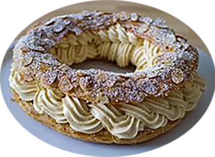

Paris Brest

Pour 6 personnes
Préparation : 30 mn
Cuisson :45 mn
Ingrédients
| Pour la pâte |
Pour la crème |
|---|
- 25 cl d'eau
- 80 gr de beurre
- 125 gr de farine
- 3 oeufs
- 20 gr d'amandes effilées
- sel
- sucre glace
|
- 25 cl de lait
- 3 jaunes d'oeufs
- 130 gr de beurre ramoli
- 20 gr de maïzena
- 60 gr de sucre
- 120 gr de palin en poudre
|
Recette
Pour la crème
- Portez le lait à ébullition;
- Fouettez les jaunes avec le sucre jusqu’à ce qu’ils blanchissent;
- Incorporez la maïzena;
- Versez dessus le lait bouillant en filet et en fouettant;
- Faites épaissir sur le feu moyen en remuant jusqu’à l’ébullition;
- Laissez refroidir;
- Travaillez le beurre en pommade;
- Incorporez la crème pâtissière et le praliné, en fouettant afin de bien aérer la masse;
Pour la pâte
- Allumez le four 180°..
- Couvrez la plaque de papier sulfurisé
- Portez l’eau à ébullition avec le beurre et une pincée de sel
- Ajoutez la farine d'un coup
- Remuez vivement jusqu’à ce que la pâte se détache de la cuillère et des parois en formant une boule (5 à 10 mn).
- Eteignez le feu
- Incorporez le oeufs un à un en fouettant avec vigueur
- Cessez de fouetter quand la pâte est lisse
- Faites un cercle de pâte sur la plaque de 20 cm avec une poche à douille, formez un second cercle dessus puis un troisième (il est aussi possible de faire des cercles plus petits pour des parts individuelles.)
- Sur le dessus décorez d’amandes
- Faites dorer 45 mn au four
- Laissez refroidir au four éteint, porte ouverte.
- Tranchez la couronne dans l’épaisseur
- Garnissez le bas de crème.
- Remettez le couvercle et poudrez de sucre glace.
|